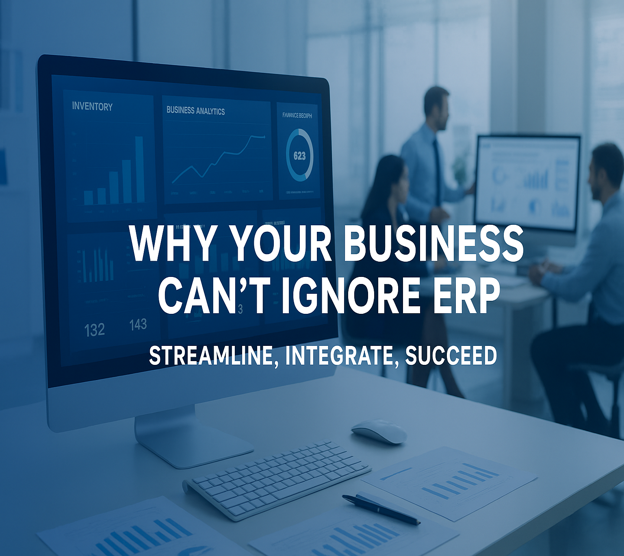

In the dynamic business landscape of Saudi Arabia, companies are constantly seeking ways to optimize operations, enhance efficiency, and stay ahead of the competition. However, a common sentiment we encounter is a hesitance to invest in an Enterprise Resource Planning (ERP) system. The truth is, ERP (Enterprise Resource Planning) software isn’t just for massive corporations. Whether you run a small trading company, a growing retail chain, or a mid-sized manufacturing firm, an ERP system can be a game-changer for your business. The words "ERP system" can sometimes sound like a heavy, intimidating, and perhaps unnecessary investment. You might be thinking, "My business is doing just fine," or "We've got our way of doing things." The idea of overhauling your entire operational backbone can feel overwhelming, especially in the fast-paced business world. But what if we told you that the real cost isn't in buying an ERP, but in not buying one?
● “We don’t need ERP; our current processes work fine.” While familiar processes might feel comfortable, they often hide inefficiencies, data silos, and missed opportunities for automation. ERP systems streamline operations, improve accuracy, and free up resources for growth.
● “ERP is too expensive and time-consuming.” This was true for older ERP models that required heavy upfront investments and long implementation timelines. Today’s cloud-based ERP systems are far more affordable, quicker to deploy, and offer flexible payment models that scale with your business.
● “Only large corporations need ERP.” Modern ERP solutions are designed for small and medium-sized organizations, with modular features that can be expanded as your company grows. You no longer need a massive enterprise to reap the benefits.
● "Our business is unique; ERP won't fit our needs." Modern ERP solutions' customization options enable them to adapt to industry-specific requirements, specialty operations, and unique workflows, rather than pushing you into a one-size-fits-all mold.
While these concerns are valid, they are often caused by outdated information or a lack of understanding about what today's ERP systems can offer. In actuality, modern ERP solutions are highly adaptable, scalable, and cost-effective, making them an excellent investment for enterprises of all sizes.
While the initial investment in an ERP system may appear substantial, the long-term consequences of operating without one present a far greater financial burden. Organizations that persist with manual processes incur significant hidden costs that directly impact profitability.
● The absence of an ERP solution leads to:
● Operational inefficiencies from redundant manual workflows.
● Financial discrepancies caused by data entry errors.
● Resource misallocation due to a lack of real-time visibility.
● Process automation that reduces labor requirements.
● Data accuracy that minimizes costly errors.
● Workforce optimization that redirects human capital to strategic initiatives
● Inventory optimization to reduce carrying costs
● Supply chain visibility to identify and eliminate bottlenecks.
● Market responsiveness is essential for Saudi Arabia's dynamic business environment
The true cost analysis reveals that while ERP implementation requires capital expenditure, continued operation without an ERP system results in ongoing operational expenses that cumulatively exceed implementation costs. In the context of Saudi Arabia's competitive and rapidly evolving market, the strategic advantage provided by ERP systems transforms them from optional investments to essential business infrastructure.
Saudi Arabia is undergoing a historic transformation under Vision 2030, a national roadmap that prioritizes digital innovation, economic diversification, and global competitiveness. In this rapidly evolving landscape, adopting an ERP system is no longer just a technology upgrade; it’s a strategic necessity.
● Align with Vision 2030 objectives by embracing digital tools that foster innovation, improve operational efficiency, and position the organization for long-term growth.
● Enhance productivity and agility, enabling faster decision-making through real-time data insights and integrated workflows.
● Boost global competitiveness by meeting international standards in business processes, reporting, and customer service.
● Regulatory compliance: Keep pace with evolving Saudi business regulations, including Zakat, VAT, and GAZT requirements, through automated and accurate reporting.
● Tax and finance management: Handle complex tax structures and financial processes seamlessly, reducing the risk of penalties or delays.
● Multi-currency and multilingual capabilities: Support businesses engaged in international trade or partnerships, ensuring smooth cross-border transactions.
● Scalability for diverse industries: From oil and gas to retail, manufacturing, and services, ERP solutions can be tailored to fit sector-specific workflows and requirements.
By leveraging ERP technology, Saudi businesses can not only meet today’s operational demands but also position themselves as innovators and leaders in the region’s future economy. In essence, an ERP is more than a system; it’s a growth engine aligned with the Kingdom’s vision for a prosperous, digitally empowered future.
So, while you might be telling yourself to "Don't go behind an ERP system," we encourage you to rephrase that thought. Instead, think: "How can an ERP system drive my business forward?"
Don't let the initial complexities deter you from a solution that can revolutionize your operations, improve your bottom line, and secure your place in the competitive market. The right ERP partner can guide you through the implementation process, ensuring a smooth transition and helping your team embrace the new technology.
Not all ERP systems are the same. Look for:
✔ Ease of use – Your team should want to use it.
✔ Local support – Does the provider understand Saudi business needs?
✔ Customization – Can it adapt to your workflows?
✔ Affordable pricing – Flexible plans for businesses of all sizes.
It's time to move beyond the fear of change and embrace the power of an integrated, intelligent business management solution. It's time to choose an ERP system.